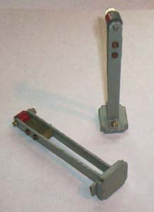
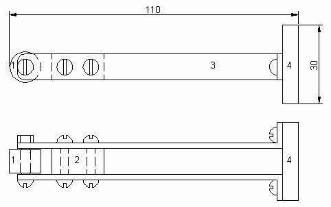
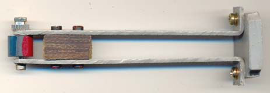

Магнитно-механический указатель-индикатор магнитных полюсов и направления магнитного поля

Принцип действия
Неизвестное априори направление намагниченности постоянного магнита, а также расположение его полюсов, можно определить без использования сложных электронных измерительных приборов (например, тесламетров [2]) с помощью другого постоянного магнита (образцового) с заранее обозначенным северным и южным полюсом. Способ определения заключаются в следующем: когда магниты обращены друг к другу одноименными полюсами, они отталкиваются, а когда разноименными, - притягиваются. На основе данного принципа на базе образцового постоянного магнита может быть построен несложный механический прибор, позволяющий определять полюса и направление намагниченности исследуемых постоянных магнитов.
Назначение и конструкция
Магнитно-механический указатель-индикатор магнитных полюсов и направления магнитного поля предназначен для оперативного определения магнитных полюсов постоянных магнитов, направления постоянного магнитного поля, наличия переменного магнитного поля, разделения намагниченных, ненамагниченных и немагнитных объектов. Для работы указателя не требуется источник электропитания. Конструкция указателя представлена на рис. 1, а внешний вид показан на рис. 2.

Рис. 1. Сборочный эскиз магнитно-механического указателя-индикатора магнитных полюсов и направления магнитного поля: 1 - цилиндрический постоянный магнит (феррит бария, типоразмер К12 х 9 х 4, намагничивание по диаметру), 2 - вставка (текстолит), 3 - боковые планки (дюралюминий), 4 - ферромагнитная плита (сталь).
В указателе используется цилиндрический постоянный магнит из феррита бария (намагничивание по диаметру) с осевым отверстием. Магнит надет на закрепленную в рамке корпуса указателя ось и может свободно вращаться вокруг нее. Северный полюс магнита покрашен в синий цвет, южный - в красный. На торце рукоятки закреплена стальная плита, с помощью которой можно отсортировать намагниченные объекты (постоянные магниты) от ненамагниченных. Для намагничивания постоянного магнита из феррита бария использовалась установка импульсного намагничивания [3] в составе генератора мощных импульсов тока и импульсного индуктора, магнитная индукция в зоне намагничивания которого составляла порядка 0.8 ... 1 Тл.

Рис. 2. Магнитно-механический указатель-индикатор магнитных полюсов и направления магнитного поля (внешний вид).
Определение направления постоянного магнитного поля
Указатель вносится в зону действия постоянного магнитного поля. При этом образцовый магнит указателя поворачивается своим северным полюсом в ту сторону, куда направлено магнитное поле. Если трение вращения относительно оси достаточно мало, то он может ориентироваться и в слабых магнитных полях (при этом стальную плиту с указателя желательно снять), сравнимых с магнитным полем Земли, в частности, выполняя роль магнитного компаса .
Определение магнитных полюсов и направления намагниченности постоянных магнитов
Указатель вносится в зону вблизи исследуемого постоянного магнита и проносится над его поверхностью. Образцовый магнит указателя стремится повернуться северным полюсом по направлению магнитного поля. Если под образцовым магнитом находится магнитный полюс исследуемого магнита (например, южный), то он поворачивается к нему своим противоположным полюсом (северным). При этом повернувшийся в противоположную сторону (в сторону наблюдателя) полюс образцового магнита указателя (южный) выполняет роль цветового индикатора магнитного полюса исследуемого магнита, совпадая с ним по наименованию.
Определение присутствия переменного магнитного поля
В зоне действия переменного магнитного поля образцовый магнит указателя начинает совершать колебательные движения с частотой испытуемого поля. По наличию и характеру этих колебаний можно судить о наличии, интенсивности и частоте переменного магнитного поля.
Сепарация объектов по магнитным свойствам
Отсортировать постоянные магниты от ненамагниченных объектов можно с помощью прикрепленной к рукоятке указателя стальной плиты, к которой намагниченные постоянные магниты притягиваются, а ненамагниченные объекты нет. Для отделения объектов, обладающих выраженными магнитными свойствами (например, ферромагнетиков), от немагнитных может использоваться образцовый магнит указателя.
Ссылки:
25.02.2013
Альтернативные источники
энергии
Компьютеры и
Интернет
Магнитные поля
Механотронные системы
Перспективные
разработки
Электроника и
технология